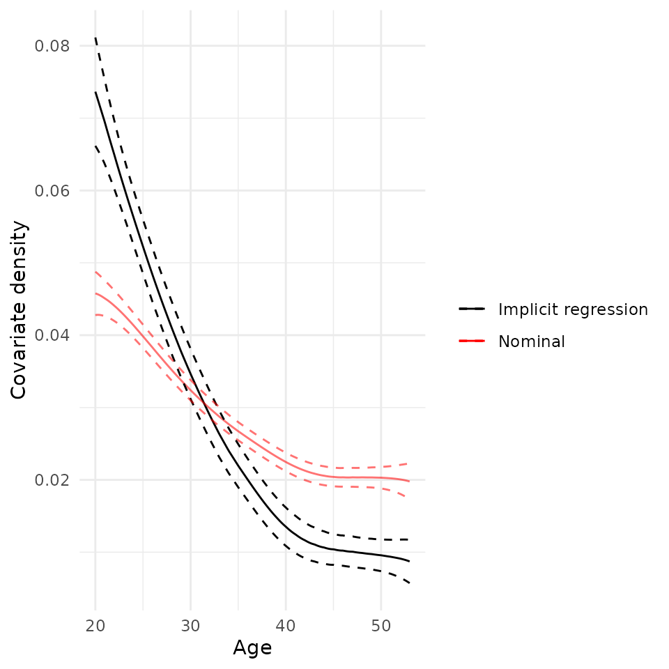
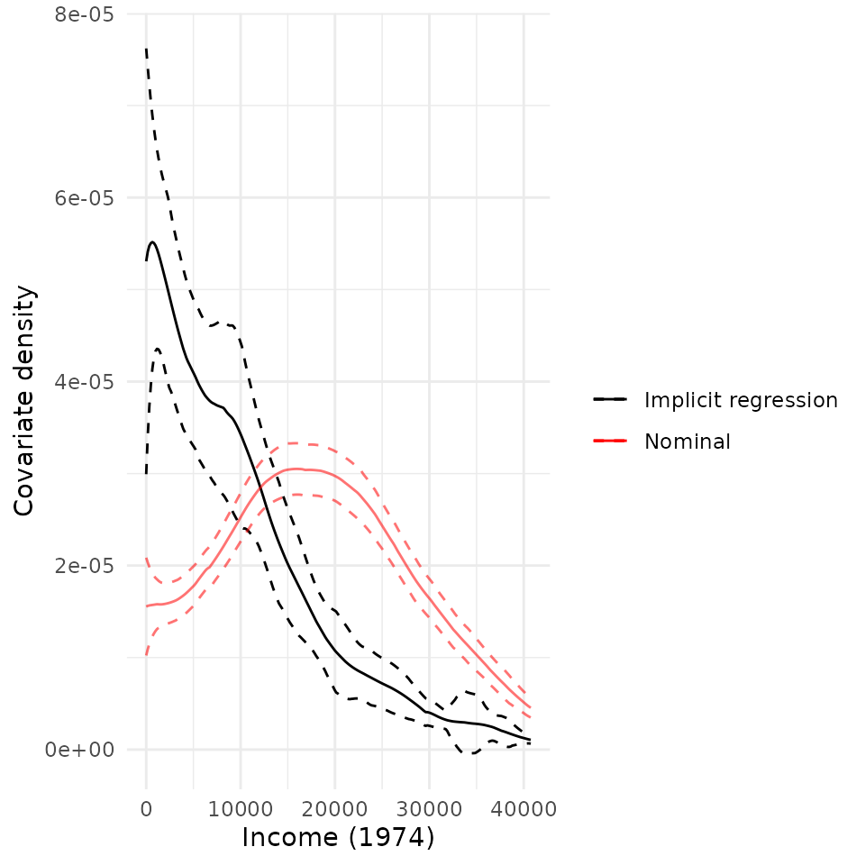
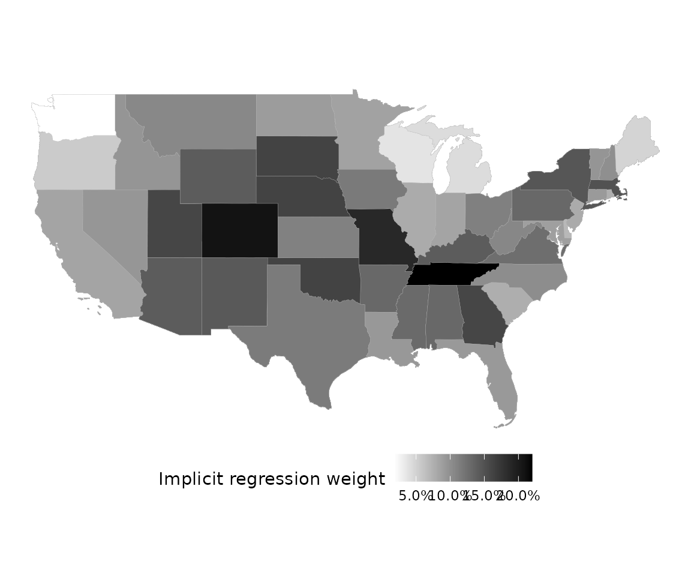

vignettes/example-usage.Rmd
example-usage.RmdAronow and Samii (2015) provide a convenient way to understand why a linear regression provides the particular estimate that it does. Given the following linear model estimated by OLS,
\[ Y = \alpha + \tau A + \beta \boldsymbol{X} \]
In the presence of heterogeneity in the effect of \(A\) on \(Y\), however, \(\hat{\tau}\) will be a weighted average of the unit-specific effects, \(\tau_i\):
\[ \frac{\mathbb{E}[w_i \tau_i]}{\mathbb{E}[w_i]}\quad \mathrm{where}\; w_i = (A_i - \mathbb{E}[A_i \mid X_i])^2 \]
This weight is equal to the conditional variance of \(A\) in expectation: \(\mathbb{E}[w_i \mid X_i] = \mathrm{var}(A_i \mid X_i)\).
These weights can be easily estimated through a partial linear regression of the form:
\[ A = \gamma \boldsymbol{X} \]
Implicit regression weights are then just the squared residuals of this regression.
The intuition of this is all simply to show that a coefficient in OLS will, in general, be the up-weighted when it’s harder to explain from the other covariates in the model. If a unit’s \(A_i\) is very easy to predict, then it will not figure prominently in the OLS estimate of the effect.
This is distinct from more conventional regression diagnostics like leverage, because those focus on how the entire vector of coefficients change. Most analysts, however, have specific hypotheses on specific coefficients, however, so the implicit regression weights demonstrate, essentially, the term-specific leverage.
##
## Attaching package: 'dplyr'## The following objects are masked from 'package:stats':
##
## filter, lag## The following objects are masked from 'package:base':
##
## intersect, setdiff, setequal, union## Linking to GEOS 3.8.0, GDAL 3.0.4, PROJ 6.3.1
#library(regweight)
devtools::load_all()## ℹ Loading regweight
data("LaLonde", package = "CBPS")
df <- filter(LaLonde, (exper == 1 && treat == 1) || (exper == 0 && treat == 0))
model <- lm(
log(re78 + 1) ~ treat + age + educ + black + hisp + married + nodegr + log(re74 + 1) + log(re75 + 1) + re74.miss,
df
)
summary(model)##
## Call:
## lm(formula = log(re78 + 1) ~ treat + age + educ + black + hisp +
## married + nodegr + log(re74 + 1) + log(re75 + 1) + re74.miss,
## data = df)
##
## Residuals:
## Min 1Q Median 3Q Max
## -10.2064 0.0659 0.6418 1.1558 6.5076
##
## Coefficients:
## Estimate Std. Error t value Pr(>|t|)
## (Intercept) 4.397170 0.482941 9.105 < 2e-16 ***
## treat 0.226513 0.202246 1.120 0.262803
## age -0.019691 0.005576 -3.532 0.000419 ***
## educ 0.030308 0.027921 1.085 0.277797
## black -0.217509 0.131896 -1.649 0.099226 .
## hisp 0.627265 0.256740 2.443 0.014612 *
## married 0.415518 0.143611 2.893 0.003837 **
## nodegr -0.415975 0.172294 -2.414 0.015820 *
## log(re74 + 1) 0.150504 0.025290 5.951 2.95e-09 ***
## log(re75 + 1) 0.361793 0.025076 14.428 < 2e-16 ***
## re74.miss -0.732823 0.196225 -3.735 0.000191 ***
## ---
## Signif. codes: 0 '***' 0.001 '**' 0.01 '*' 0.05 '.' 0.1 ' ' 1
##
## Residual standard error: 2.959 on 3201 degrees of freedom
## Multiple R-squared: 0.3103, Adjusted R-squared: 0.3081
## F-statistic: 144 on 10 and 3201 DF, p-value: < 2.2e-16Plots will make a best effort to infer the appropriate type of a given covariate. If you aren’t happy with how they look, it’s simple enough to use the underlying functions called by the S3 method directly. They are:
regweight::plot_weighting_discreteregweight::plot_weighting_continuousregweight::plot_weighting_map
rw_mod <- calculate_weights(model, "treat")
hist(rw_mod) + scale_x_continuous("Weight")## Scale for 'x' is already present. Adding another scale for 'x', which will
## replace the existing scale.
plot(rw_mod, df$married) + scale_x_continuous("Married", breaks = c(0,1))## Scale for 'x' is already present. Adding another scale for 'x', which will
## replace the existing scale.
plot(rw_mod, df$nodegr) + scale_x_continuous("No degree", breaks = c(0,1))## Scale for 'x' is already present. Adding another scale for 'x', which will
## replace the existing scale.
plot(rw_mod, df$black) + scale_x_continuous("Black", breaks = c(0,1))## Scale for 'x' is already present. Adding another scale for 'x', which will
## replace the existing scale.
plot(rw_mod, df$age) + scale_x_continuous("Age")## Scale for 'x' is already present. Adding another scale for 'x', which will
## replace the existing scale.
plot(rw_mod, df$re74) + scale_x_continuous("Income (1974)")## Scale for 'x' is already present. Adding another scale for 'x', which will
## replace the existing scale.
For the sake of example, let’s imagine that we had geographical information on each unit, as well. Geometries/shapes should be specified in sf::sfc format.
state_shapes <- USAboundaries::us_states()
state_shapes <- filter(state_shapes, !(state_abbr %in% c("HI", "PR", "AK")))
pr_state <- seq(1, 10, length = nrow(state_shapes))
pr_state <- pr_state / sum(pr_state)
df$geometry <- sample(state_shapes$geometry, nrow(df), replace = TRUE, prob = pr_state)
plot(rw_mod, df$geometry)